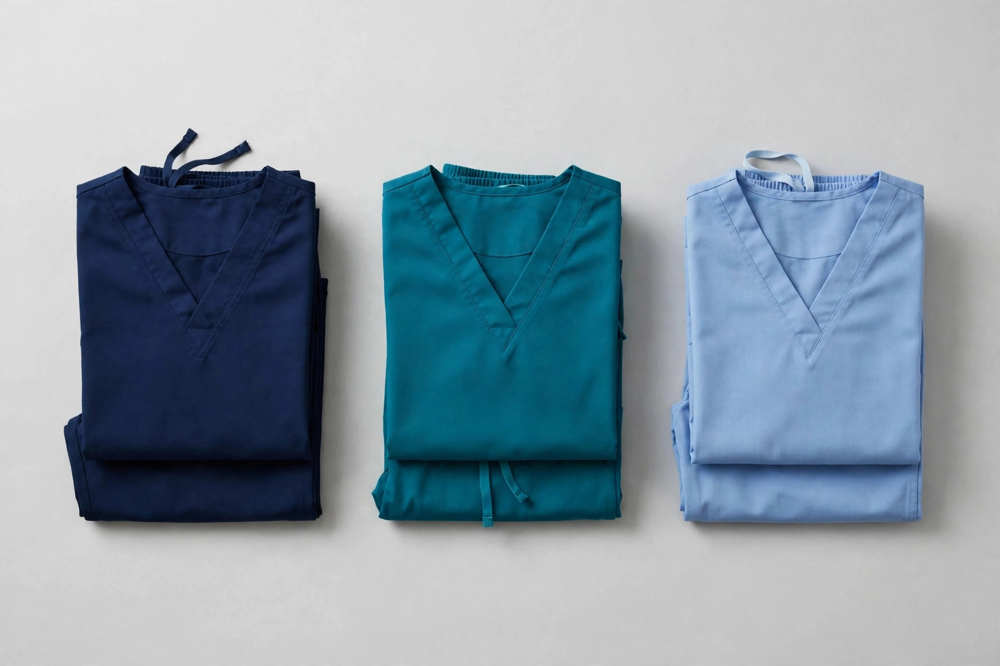

Most buyers order scrubs the way they order t-shirts, and that is where the trouble starts. A scrub is not a t-shirt. It is a uniform that gets washed harder, worn longer and judged more harshly than almost anything else in a clinic. The wearer will know within a week. As a custom medical scrubs manufacturer in Sialkot, Pakistan, we make scrub sets for hospitals, clinics, dental practices and care homes, and the repeat orders are almost never the ones that started with the cheapest fabric. This guide goes department by department. A ward nurse and a theatre nurse do not work the same day, so their scrubs should not be the same either.

A ward nurse walks kilometres in a shift, bends over beds all day and sits down for about four minutes in twelve hours. Her scrub has to move with her, and it has to carry things. That is why the ward set starts with the pockets, not the colour. Two roomy patch pockets low on the top, a chest pocket with a pen slot, and a trouser pocket that holds a phone without it sliding out when she bends. Pockets placed too high snag on bed rails, and pockets placed too low drop their contents every time she leans over a patient, so the position is measured, not guessed. The top needs side vents, because a straight hem rides up at the back the first time she reaches across a bed. The trouser needs a drawstring that stays tied. Stretch matters more here than in any other scrub. A little spandex in a poly-cotton blend lets her crouch without the seams pulling. Dark colours earn their keep here.
Theatre is the opposite job. Nothing loose, nothing to catch, nothing that gets in the way of a sterile field. The theatre top is short, simple and V-necked, with short sleeves and either no chest pocket at all or one flat pocket that sits flush. The trouser is a plain drawstring. Elastic waistbands soften and fail in the heat of hospital laundering, and a drawstring can be replaced in seconds. Theatre sets are washed hotter and more often than any other scrub, so this is where colourfastness and fabric treatment are decided, not in the showroom. A fabric that looks crisp on the hanger and fades patchy after twenty hot washes has failed at its actual job. Theatre scrubs are usually ceil blue or green for a reason. Under bright theatre lights, pale blue and green are easier on the eyes for hours at a time. A theatre scrub should be the garment nobody notices.
Outside the hospital, scrubs change again, and this is where most catalogue orders go wrong, because the buyer orders one style for the whole building. A dentist works close, leaning over a patient with water and fine spray in the air, so light colours show every mark within an hour and a mid-tone top with a darker trouser lasts the day better. A chest pocket with a pen loop matters more than a second patch pocket. A vet has a different problem. Pet hair, claws and time on the floor with animals mean a heavier fabric, reinforced stitching at the pockets and knees, and a colour dark enough that a day of fur does not show. A cargo pocket on the trouser earns its place here. A care home is different again. The residents should not feel they are in a hospital, so the colours are warmer and the cut is softer, and the staff need to be easy to tell apart at a glance, which is where a small embroidered role or a department colour helps. One style for all three never works.
Ask a scrub buyer what matters and they will talk about the fitting. Ask us, and we will talk about the twentieth wash, because that is when a scrub is actually judged. The first fitting tells you almost nothing. The fabric that feels soft in the showroom can pill under the arms by week three, shrink a size after a hot wash, or fade in patches. Most buyers get this wrong. They choose by hand feel, and hand feel tells you nothing about wash twenty. The workhorse blend is poly-cotton, usually around 65 percent polyester to 35 percent cotton, because it holds its colour, dries fast and keeps its shape through repeated hot washes. A cotton-rich blend feels better on the skin and breathes better on a long shift, but it shrinks more and needs a gentler wash, so it suits a clinic that launders at home, not a hospital laundry. A little stretch, two to four percent spandex, is worth having in any scrub that has to bend and crouch, but too much stretch and the top loses its shape after a season. For theatre, ask for a fabric with a fluid-resistant finish, not a coating, because a coating peels and a finish survives the wash. Test it yourself before you order two hundred pieces. Wash the sample five times, hot, the way your laundry washes it. Measure it before and after, check the V-neck binding for curling, and look at the colour in daylight. Five washes beat five showroom visits.
I still check every scrub sample the same way I did on the first one. I sit down in it, because a scrub that is comfortable standing and tight sitting will be hated by lunchtime. I pull the pocket stitching with my thumb, not hard, just enough to see whether the corners are bar-tacked or only stitched once. I tie the drawstring, pull it, and see whether it slips. And I look at the V-neck binding, because that is the first thing to curl when the fabric is wrong, and once it curls you cannot iron it back. It takes five minutes, and I have caught more problems in them than in any inspection report. The sample that passes them is usually the sample the customer reorders.
When a scrub comes back to us, it is almost never the fabric that failed. It is the small parts. The drawstring that frayed because it was never heat-sealed. The elastic waistband that went slack after a month of hot washes. The pocket corner that tore because it was stitched once instead of bar-tacked. The neck binding that rolled after the first wash. Cheap to get right, expensive to fix later, because a torn pocket means a whole set goes in the bin. Embroidery has its own small rules. A chest logo sits above the pocket, never on it, because a logo stitched through a pocket makes the pocket useless and puckers the fabric. On a theatre scrub, the logo goes on the sleeve or not at all. Your own brand label and size tags go in as standard, with a "Made in [your country]" tag on request. Send the label artwork early, with the design, so it is ready when the sample is.
A small clinic ordered light grey scrubs for its whole team, one style for everyone. The grey looked clean and modern in the photographs, and the first week was fine. By the end of the first month the sets had been through the clinic's hot wash fifteen times. The grey had gone blotchy, lighter at the seams and darker in the folds, and the V-neck binding on half the tops had started to curl. The clinic sent them back, disappointed, because the staff had stopped wanting to wear them. We remade the order in a darker, colourfast poly-cotton, changed the binding to a self-fabric binding, and split the order into two styles, a V-neck set for the nurses and a longer tunic style for reception. The lesson cost one order. Light colours and hot washes are a combination to test on a sample, not discover on two hundred pieces.
Scrubs are uniforms, so a first order starts at 20 pieces per style, and you can mix sizes and colours inside that number. Send your design, a tech file if you have one, or a clear photo of the scrub you wear now. As a custom medical scrubs manufacturer in Sialkot we quote exactly for that piece, because a firm price is only possible once the piece itself is understood. The sample takes 7–10 working days, and we share photographs for your approval before anything goes into bulk. Your own labels and tags go in as standard, with a "Made in [your country]" tag on request. Every run is checked twice, in line while production is running and again as a final inspection before packing. You receive final quality-check photographs before anything is dispatched. For a small order, one piece from the run can be sent to you for checking while the rest continues, and any change you ask for is applied to the remaining pieces. Plan backwards from the day you need them. Sampling takes seven to ten working days, bulk production depends on the quantity and the styles, and shipping to North America or Europe goes by air or by sea. A clinic that starts sampling this week can have its team in new scrubs within the season. See the full range on our uniforms & workwear page.
The fastest quotes we send are the ones where the first message already answers the questions we would have asked. Tell us who wears the scrub and where: a ward, a theatre, a dental practice, a care home. Tell us how many pieces per style, which colours, which sizes, and whether you need a logo embroidered and where it should sit. If you know your wash temperature, say so. A photo of the scrub you wear now helps more than a long description. We can see the pockets, the neckline and the fit in one glance. Send all of that on WhatsApp at +92-339-5099397 or by email at safettech@outlook.com, and we will reply with an exact quote for that piece and a sampling plan. Or use our contact page to request a sample.

Scrubs are the hardest-working garment we make, and the people who wear them notice every shortcut. Send me your design and tell me which department it is for, and I will tell you honestly what will survive their wash and what will not.
Ahmed Zahid
Founder & Director, Safe-T TECH International · Sialkot, Pakistan
Send your design today — samples in 7–10 days, trial orders from just 20 pieces per style.